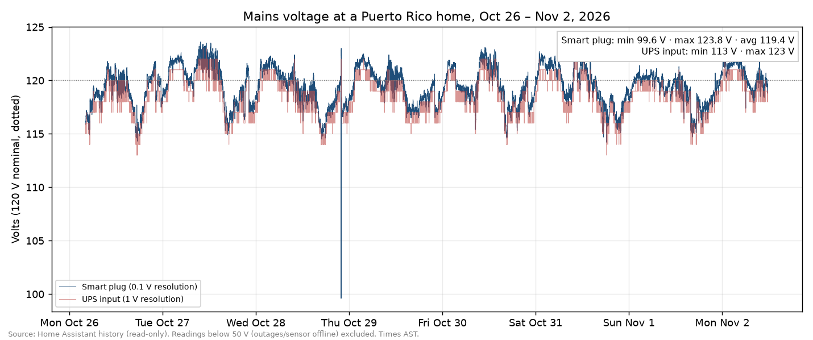
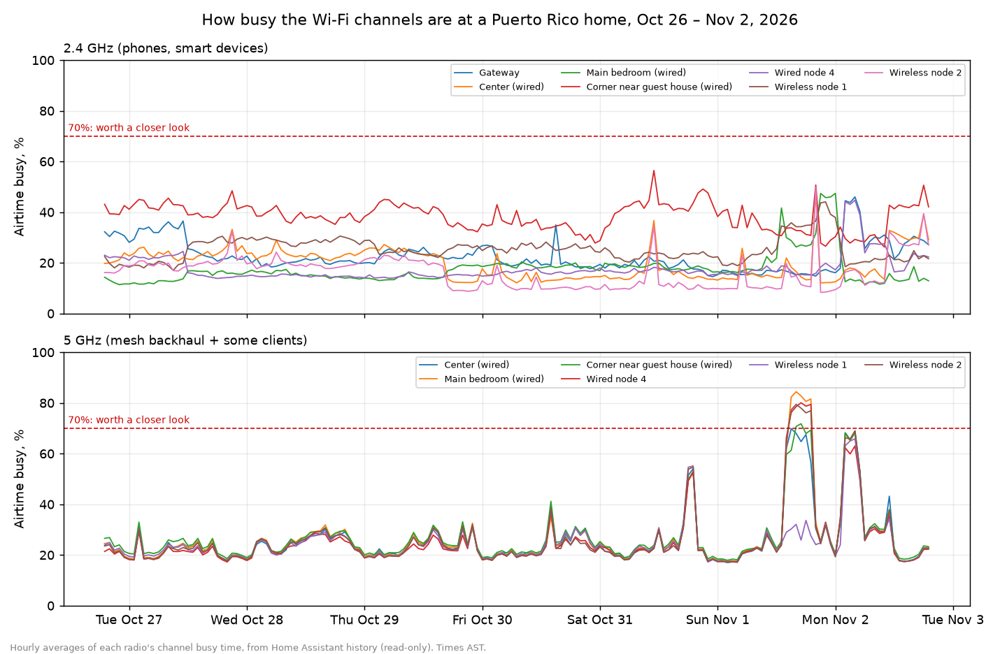

Feature · Networking
OpenWrt mesh network in a concrete house: batman-adv, VLANs and Tailscale
Adam Beguelin, HA News's publisher, lives in a concrete house in Puerto Rico with no data cables in the walls. He wanted the smart gadgets he doesn't fully trust kept off the network his laptop uses. His answer is an OpenWrt mesh network — small routers running OpenWrt, the open-source replacement for factory router firmware — where each mesh node serves your devices and passes traffic along to the next.
Over the past year he also found sneaky ways to get real cables into the house: up a roof pipe, through the holes used by mini-split air conditioners, and out of the fiber installer's hole to a Cudy node near the guest house. Home Assistant watches it all.
It all lives in a private repository, WRTflasher, which builds custom firmware and configures each node automatically — 661 commits over just under a year, running a real home with three separate networks, backup internet links, remote access and Home Assistant dashboards.
Why Adam built it
The first motivation is security. "I don't want sketchy IoT devices on the same network as my laptop," Adam says. IoT gadgets — cameras, plugs, sensors — can be sketchy, so in this house they live on their own IoT VLAN, set up in OpenWrt. A VLAN (a virtual LAN) cuts one physical network into separate ones that can't see each other: the smart devices get internet access, but no path to the laptops.
The second is the building: concrete walls, no in-wall data wiring. Pulling cable through the walls wasn't an option, so a wireless mesh came first and only later became a hybrid, with a few wired runs.
The third is open source, end to end: OpenWrt on the routers, Home Assistant on top, and batman-adv — a free, open-source routing layer — underneath, picking the best path between nodes. Tailscale "was a game changer" for remote access, but that came later.
"I believe in open source," Adam says. "I like that the code can be reviewed, so I feel more secure about it. Open source has changed the world in very positive ways, and I want to support that."
From first commit to fiber
Six milestones stand out in the commit log:
| When | What happened |
|---|---|
| Nov 14, 2025 | First commit; the config generator takes shape. |
| Dec 26, 2025 | VLANs land; flashed nodes join the mesh on first boot. |
| Jan 19, 2026 | First Home Assistant mesh dashboard. |
| Feb 26, 2026 | First wired link; powerline adapters get a try. |
| Jun 10, 2026 | Powerline retired for real cable. |
| Sep 11, 2026 | Fiber becomes the primary internet link. |
How the OpenWrt mesh network works
At the center sits the gateway, an OpenWrt One (check price on Amazon) running the firewall and the three separate networks. It manages the internet connections too: fiber is the main line, with Starlink Residential Lite and T-Mobile as automatic backups. When the fiber goes down, the house fails over without anyone noticing.
Around it are the mesh nodes: GL.iNet GL-MT3000 travel routers, sold as the Beryl AX (check price on Amazon), plus a few Cudy single-port access points. Devices connect on each node's 2.4 GHz radio, with Wi-Fi 6.
The 5 GHz radio in each node is reserved for the backhaul — the link nodes use to pass traffic to each other and back to the gateway, separate from the Wi-Fi devices use. It's a hidden, WPA3-protected network with every node on one channel.
Three networks ride across the mesh:
| Network | Who it's for | Wi-Fi setup |
|---|---|---|
| LAN | Laptops, phones, trusted gear | WPA3, fast roaming on |
| IoT | Smart devices | WPA2, roaming off for older devices |
| Guest | Visitors | Fully isolated |
The firewall gives smart devices internet access and lets them answer connections started from the main network, but they can never start connections themselves — with one narrow exception for the Home Assistant host.
The glue is the firmware: WRTflasher generates each node's settings from a template and builds custom firmware around one principle — "configure once, flash many APs." A newly flashed node joins the mesh by itself on first boot.
Getting wires into a concrete house (wired backhaul)
The mesh worked, but Adam wanted more. "I really wanted a few wired routers," he says. Starlink had already shown one route: a wire running up to the dish on the roof.
The idea came while he was brainstorming with ChatGPT, showing it photos of the pipes on his roof. "I realized that I could run cables up the same pipe to the roof, and then across the house and into rooms by using the same holes that the mini-split ACs use." Those runs reach the center of the house and the main bedroom. "This made a big difference."
Why do cables matter so much? A node that relays traffic over Wi-Fi has to receive it and send it again on the same channel, so speed drops and lag grows with every hop. A cable takes that relay work off the air entirely, freeing the shared 5 GHz backhaul.
Fiber opened the next route. "When the installer drilled a hole for that fiber, I realized I could use the same hole and run a cable around the house to the corner nearest the guest house." A Cudy AP3000 Outdoor (check price on Amazon) went up there on a wired link. "That solved a lot of the weaknesses."
That node sits about 20 feet from the guest house and covers it well. "Now the guest house doesn't even need a batman node," Adam says. Every wireless node sends its own routing messages and shares the backhaul channel, so one fewer node means less crowding.
The wired access points also got a 5 GHz network just for smart devices, so the back-gate camera connects straight to the wired corner node — its video stays on the cable, "also relieving some of the wireless mesh pressure," as Adam puts it.
Tip: finding cable routes in a house you can't drill
- Reuse existing penetrations: mini-split line-set holes, old satellite or antenna entries, and the hole your fiber or cable installer just drilled.
- Check existing conduit and roof pipes before drilling anything new.
- On a roof or outside wall, use outdoor-rated, UV-resistant cable. Use direct-burial cable if it runs underground.
- Reseal every penetration you open, with outdoor-rated sealant on the outside and around line-set covers.
- A single wired node at the far edge of the house helps more than any wireless hop; here, ceiling- or wall-mount Cudy AP3000 units on PoE fill those spots.
Why G.hn powerline didn't work here
G.hn is powerline networking: adapters plug into wall outlets and send data over the house's existing electrical wiring. It sounds perfect for a house with no data cables — "wired" links, no drilling. Adam's verdict after trying it: "PR electricity is just too noisy."
The benchmarks back him up. Powerline is half-duplex — every adapter shares one channel. With three adapters on the same circuits, one link fell to 12 Mbps sending and 2 receiving; removing the third brought it back to 28 and 89. One access point did better over the wireless mesh than through its own powerline adapter, 23 to 26 Mbps versus 4.8.
And the slow paths dragged the whole mesh down: one Wi-Fi-only node jumped from 3.6 Mbps to 39 and 54 once the third adapter was unplugged, likely because batman-adv had been routing some traffic over them. The adapters came out in June 2026, replaced by the cable runs above.
Powerline shares its wire with all the electrical noise on it. The chart below shows one week of mains voltage logged by Home Assistant here. A smart plug measured between 99.6 V and 123.8 V against a 120 V nominal supply — the low reading was a single brief dip — and most days swing several volts between about 114 V and 123 V. Outages are frequent, and even with the power on, the house's UPS sometimes runs on battery because the power quality is so poor.

Mains voltage from two Home Assistant sensors, a smart plug and a UPS input, over seven days. Source: HA News, from the homeowner's Home Assistant history.
The changes that helped most
Asked what made the biggest difference, Adam names three changes.
Channel planning. Each node's 2.4 GHz radio gets a fixed channel — 1, 6 or 11 — so neighboring nodes don't share one. The 5 GHz mesh stays on a single narrow 20 MHz channel that every node shares.
Freeing the gateway's radio. Once enough nodes could reach the gateway by cable, the gateway left the Wi-Fi mesh entirely. Its 5 GHz radio now serves devices only, on a wide 80 MHz channel.
Choosing which nodes offer 5 GHz to devices. "We use 5 GHz for mesh with narrow band to help with concrete," Adam says. That left no 5 GHz for phones and laptops at first. Then the wired access points turned on 5 GHz for devices too — they don't relay anything over the air. "Starting to select nodes that used 5 GHz for clients helped and made the mesh 5G less busy."
Tailscale subnet router: "a game changer"
Remote access was the last big problem, and Adam calls Tailscale "a game changer" for it. Tailscale builds a private network between your devices, wherever they are.
The setup moved in stages: an idea to run it on the gateway, then a Linux server in January 2026, and today an Ubuntu box acting as a subnet router — Tailscale's name for a device that shares your home networks into your private Tailscale network, so a phone or laptop far away can still reach them. No port forwarding, nothing exposed.
For Tailscale and Home Assistant together, Adam's day-to-day use comes down to two things: the Home Assistant companion app on his phone, and opening the Home Assistant dashboard from his laptop when he's away from home.
Home Assistant keeps watch
The mesh and the smart home grew into each other. A monitoring script feeds the dashboards with each node's TQ — batman-adv's link-quality score — plus internet-link status and Starlink throughput, with automations on top. The Home Assistant configuration lives in the same repository as the firmware: one source of truth for the whole house. A Frigate camera system on a GPU box rides the network. New to Home Assistant hardware? See Home Assistant on a Raspberry Pi, plus Zigbee vs Z-Wave and the best Zigbee hub.
The most interesting number is airtime busy — the percentage of time a Wi-Fi channel is actually occupied. Signal bars won't tell you a channel is crowded; airtime will. "We monitor airtime busy on the Home Assistant graph, so we can tell if things are getting too crowded," Adam says. The graphs cover every node and both bands, grouped by channel. Anything above about 70% busy is worth a closer look, and an alert fires if a wired node falls back to Wi-Fi.

Hourly airtime busy for each radio in the house over seven days, from Home Assistant. The dashed line marks 70%, where a channel is worth a closer look. Source: HA News, from the homeowner's Home Assistant history.
On an ordinary day, the 2.4 GHz radios that phones and smart devices use sit at roughly 15 to 40% busy. The busiest is the wired corner node near the guest house, which averaged about 38%. All the 5 GHz mesh radios share one channel, so their lines move together. They usually run at 20 to 30% busy, and on Nov 1 and Nov 2 they briefly spiked past the 70% line. That spike wasn't the network struggling: Adam rebooted the center access point while chasing buffering on a streaming box, and the devices on it shuffled to other nodes. The buffering turned out to be the streaming service's servers, not the Wi-Fi.
For tinkerers
Everything below is the deep end — nothing above needs it.
The radio plan
Devices get Wi-Fi 6 on 2.4 GHz using HE20 channels (20 MHz wide), with nodes pinned to the non-overlapping channels 1, 6 and 11. The 5 GHz backhaul is a hidden, WPA3-SAE network on a single 20 MHz channel shared by every node, because batman-adv needs all mesh radios on the same channel. The mesh interface MTU is 1532, leaving room for batman-adv's encapsulation — the extra header it wraps around each packet.
Hop penalty and failover
Each node adds its wired interface and its 5 GHz mesh interface to the same batman-adv mesh. Paths are picked by link quality (TQ) with a per-interface hop penalty: 0 on wired, 40 on Wi-Fi. Cable wins whenever it's up; nodes fall back to Wi-Fi with no config change.
Measuring airtime
On each node, run iw dev <iface> survey dump and read the entry marked [in use]: it reports cumulative channel active time and channel busy time in milliseconds. Poll on a schedule — the monitoring service uses SSH from a server on the network — and compute busy % from the change since the last poll: (busy_now - busy_prev) / (active_now - active_prev) × 100. Lifetime totals hide recent spikes, so use the delta. Publish one sensor per node and band, and graph it.
Building the firmware
Gateway and nodes share MediaTek MT7981 silicon on the mediatek/filogic target, so one build setup covers everything. WRTflasher runs the official OpenWrt Image Builder inside Docker; a template script generates each node's UCI config, and passwords live in a .env file that never enters git. Flash a node and it joins the mesh on first boot — verify with a health script that prints the topology sorted by TQ. The firmware builds on OpenWrt 24.10.0, with the 25.12 series next on the list.
Gotchas
On wireless-backhaul nodes, never use wifi reload — uci commit plus a reboot is the house rule. Reboots aren't free either: the multi-WAN tracker (mwan3track) can wedge offline and hostname renames can revert, so both have boot-time fixes. And after a failover, existing connections stay pinned to the backup link until conntrack is handled.
The Tailscale command
tailscale up --advertise-routes=<lan>/24,<iot>/24
Run it on the Ubuntu box, enable ip_forward, then approve the advertised routes in the admin console.
FAQ
Why put IoT devices on their own VLAN?
Because Adam doesn't want sketchy IoT devices on the same network as his laptop. On their own VLAN, smart devices can reach the internet and answer connections the main network starts, but they can't open connections to laptops or phones. Home Assistant is the one allowed exception.
Do the access points need Ethernet?
No. The mesh started wireless-only because the house has no in-wall data wiring. But wired links help a lot, and here they run through a roof pipe, mini-split AC holes and the fiber entry hole. batman-adv prefers wired and falls back to Wi-Fi if a cable is pulled.
Does powerline networking work in a concrete house?
It didn't here. Benchmarks showed slow, inconsistent links that got worse as adapters were added, and the slow paths dragged down the whole mesh, so the adapters were retired for real cable. Adam blames Puerto Rico's noisy electricity. Results vary by building and circuit, so test before you commit.
Why use a narrow channel for the mesh?
A 20 MHz channel puts the same transmit power into less spectrum, which helps a link get through concrete. Every mesh node has to share one channel anyway, so narrow is the safe choice. The trade-off is throughput, so the wired nodes carry 5 GHz for devices instead.
Why does the IoT network use WPA2?
Legacy compatibility. The IoT network runs WPA2-PSK with the fast-roaming features switched off, because older devices don't handle them; the LAN network carries them.
Why would a mesh node fail to join at boot?
Occasionally a radio woke up with the wrong country setting, which barred it from initiating on the mesh channel, so it never joined. A boot guard now re-sets the US country code on every boot.
Where should Tailscale run?
Not on the router. It began as a gateway idea, moved to a Linux server in January 2026, and today an Ubuntu subnet router advertises the LAN and IoT networks. Approve the routes in the admin console; there's no port forwarding to configure.
Where it stands
One gateway and a handful of travel routers now run the house: fiber, Starlink and T-Mobile on the internet side; three networks over the batman-adv mesh; Tailscale for access; Home Assistant on top. The repo is private. The recipe is not.
What's next? "Hopefully nothing," Adam says. "I just want to enjoy the fast WiFi across the property." The one project on his list is a public dashboard showing when the power or water is out, because neighbors often text to ask, and a link is easier than a reply.
As an Amazon Associate, HA News earns from qualifying purchases. The Starlink link is Adam's referral link; new customers who use it and Adam each get a Starlink service credit.